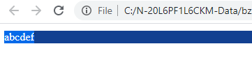
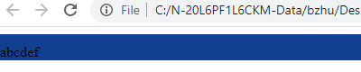

在调一个 CSS 的时候，发现以个有趣的现象，子元素的外边距，会跑到父元素的外面，变成了父元素的外边距。觉得有点奇怪，使用关键字 “margin out of parent” 搜了一下，果然这是 CSS 的一个特性，叫 margin collapse，这个我之前是了解的，不过之前了解的情况是相邻元素（兄弟元素）之间发生的情况。而这次我碰到的是父子元素之间的。
搜索结果首先指向了一个 Stack overflow 上的链接，基本与我碰到的情况完全一样。
随后我仔细读了答案提供的链接
使用中文”外边距折叠“也有很多有用的信息，比如 MDN
一个例子
<!DOCTYPE html>
<html>
<head>
<meta http-equiv="Content-Type" content="text/html; charset=UTF-8">
<title>Service</title>
<style>
#sidebar {
background-color:rgba(18, 64, 145, 1);
}
p {
margin-top: 10px;
}
</style>
</head>
<body>
<div >
<div id="sidebar">
<p>abcdef</p>
</div>
</body>
</html>
可以看到，在 P 元素上设置的上边距竟然跑到了外层的 DIV 外层

如果要避免此种的情况的发生，只需要在 外层元素（比如 Sidebar) 上加上 border（或者 padding) 即可解决：
<!DOCTYPE html>
<html>
<head>
<meta http-equiv="Content-Type" content="text/html; charset=UTF-8">
<title>Service</title>
<style>
#sidebar {
background-color:rgba(18, 64, 145, 1);
border-top: 1px solid transparent; // 新添加的行, 加上 padding-top:1px 也可
}
p {
margin-top: 10px;
}
</style>
</head>
<body>
<div >
<div id="sidebar">
<p>abcdef</p>
</div>
</body>
</html>
效果如下，可以看到在 P 的上部，sidebar 的内部已经出现了 10px 的边距

那么问题来了，为什么会有外边距折叠（ margin-collapse）呢，这篇文章给出了一定的解释